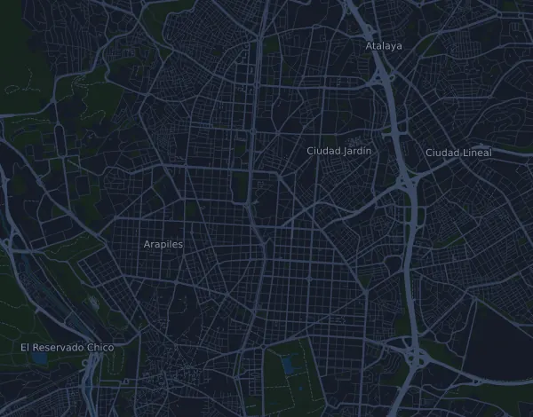

Movistar Madrid Medio Maratón 21 km
- Distancia
- 21,1 km
- Desnivel positivo
- ↑ 497 m
- Punto más alto
- 753 m s. n. m.
- Superficie
- Asfalto
- Perfil
- Ondulado
- Salida
- 09:15 h
- Avituallamientos
- 3
Perfil de altitud
Prepárate con Mila
Mila es un coach de running en una app. Si añades una carrera a tu plan, el coach planifica tus semanas hasta la salida según tu forma y te da un pronóstico de tiempo y un plan de ritmo, hidratación y energía para el recorrido.

La sesión justa. El día justo.
El recorrido

Sobre el recorrido
El Movistar Madrid Medio Maratón es un recorrido de carretera con mucho sube y baja: 497 m de desnivel positivo y 495 m de negativo en 21,1 km, siempre entre 639 y 753 m de altitud. Lo más duro llega pronto. Desde el km 0,2 subes 54 m en unos 2,5 km, desde el km 3,2 otros 53 m al 4,5 %, y en el km 4,6 una rampa corta de 161 m al 15,7 % te deja en el punto más alto. Después vienen repechos más suaves en el km 12,2 y en el 17,7, y a menos de 1 km de meta, en el km 20,2, otra rampa de 190 m al 13,2 %.
Sal con calma y dosifica los primeros 5 km: lo que gastes ahí lo pagas después. Necesitas piernas fuertes para las rampas cortas y para todo el desnivel negativo, que también castiga. Guarda algo para el final. Hay avituallamiento con agua en los km 5, 10 y 15.
Esta descripción la ha escrito el coach de Mila con ayuda de IA, a partir de los datos del registro de carreras de Mila.
Subidas
| Empieza en | Longitud | Desnivel | Pendiente | Cima (m s. n. m.) |
|---|---|---|---|---|
| km 0,2 | 2,5 km | 54 m | 2,2 % | 727 |
| km 3,2 | 1,2 km | 53 m | 4,5 % | 753 |
| km 4,6 | 160 m | 25 m | 15,7 % | 753 |
| km 12,2 | 930 m | 27 m | 3,0 % | 701 |
| km 17,7 | 1,2 km | 27 m | 2,3 % | 695 |
| km 20,2 | 190 m | 25 m | 13,2 % | 664 |
Antes de la salida
Avituallamientos
| En | Qué hay |
|---|---|
| km 5,0 | agua |
| km 10,0 | agua |
| km 15,0 | agua |
Horas de salida
- 09:15 h
Fuente: mediomaratonmadrid.es, consultado el 24 de noviembre de 2026
Tabla de ritmos
Movistar Madrid Medio Maratón 21 km en 1:30:00 – ritmo por km y tiempos de paso
4:16 min/km · km 5: 21:20 · km 10: 42:39 · km 15: 1:03:59 · meta: 1:30:00
Movistar Madrid Medio Maratón 21 km en 1:45:00 – ritmo por km y tiempos de paso
4:59 min/km · km 5: 24:53 · km 10: 49:46 · km 15: 1:14:39 · meta: 1:45:00
Movistar Madrid Medio Maratón 21 km en 2:00:00 – ritmo por km y tiempos de paso
5:41 min/km · km 5: 28:26 · km 10: 56:52 · km 15: 1:25:18 · meta: 2:00:00
Movistar Madrid Medio Maratón 21 km en 2:15:00 – ritmo por km y tiempos de paso
6:24 min/km · km 5: 31:59 · km 10: 1:03:59 · km 15: 1:35:58 · meta: 2:15:00
Los tiempos suponen un ritmo constante de principio a fin. Es pura aritmética, no un pronóstico: en las subidas, entre la gente y en los avituallamientos el ritmo varía.
Preguntas frecuentes
¿Cuándo es Movistar Madrid Medio Maratón 21 km?
Movistar Madrid Medio Maratón 21 km se celebra el domingo, 4 de abril de 2027. Comprueba la fecha y la hora de salida con el organizador.
¿A qué hora sale Movistar Madrid Medio Maratón 21 km?
Según el organizador: 09:15 h.
¿Cuánto mide Movistar Madrid Medio Maratón 21 km y cuánto desnivel tiene?
La carrera tiene 21,1 km, con 497 m de desnivel positivo y 495 m de desnivel negativo. El punto más alto está a 753 m sobre el nivel del mar.
¿Cómo es el recorrido de Movistar Madrid Medio Maratón 21 km?
El recorrido es ondulado, con 24 m de desnivel por km de media. Tiene 6 subidas de al menos 25 m; la mayor empieza en el km 0,2: 54 m en 2,5 km. La salida y la meta están en el mismo lugar. Se corre sobre asfalto.
¿Hay avituallamientos en Movistar Madrid Medio Maratón 21 km?
Sí. El organizador prevé 3 avituallamientos: km 5,0 (agua); km 10,0 (agua); km 15,0 (agua).
¿Cómo reparto el ritmo en Movistar Madrid Medio Maratón 21 km?
Busca un esfuerzo constante más que un ritmo constante: deja que el ritmo baje en las subidas, recupéralo cuando el terreno se allane y contente en los primeros kilómetros. Las subidas más grandes empiezan en el km 0,2, km 3,2, km 12,2 y km 17,7. En Mila tienes un plan de ritmo para este recorrido, según tu propia forma.
Más carreras como esta
Más carreras cerca
- Tenerife Bluetrail 110k9 de abril de 2027 · Playa de Los Cristianos, España
- MANN-FILTER Maratón de Zaragoza 42,2 km18 de abril de 2027 · Zaragoza, España
- Zurich Marató Barcelona 42,2 km14 de marzo de 2027 · Barcelona, España
- Trail Menorca Camí de Cavalls – TMCDC 185 km30 de abril de 2027 · Ciutadella, España
- Transgrancanaria Classic 125 km26 de febrero de 2027 · Las Palmas de Gran Canaria, España
- Zurich Maratón de Sevilla 42,2 km21 de febrero de 2027 · Sevilla, España
Prepárate con Mila
La sesión justa. El día justo.
Los datos proceden del archivo del recorrido y de la información del organizador. Comprueba la fecha, las horas de salida y el reglamento con el organizador.
Mila no está vinculada al organizador ni a los patrocinadores de la carrera, ni está patrocinada o avalada por ellos. Los nombres y las marcas pertenecen a sus propietarios. ¿Organizador o titular de derechos? Solicitar un cambio o la retirada